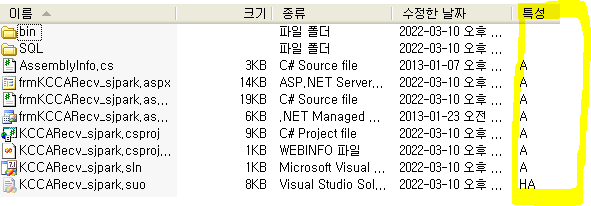
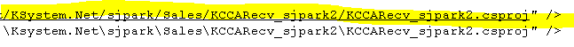
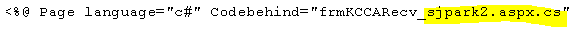
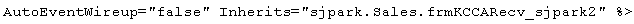
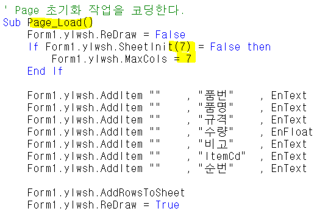
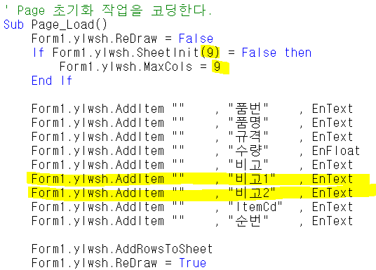
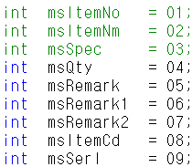

사이트 작업 및 초기설정
- 23.11.08
-
경로 폴더를 만듬
-
aspx, cs , csproj, webinfo 4개 파일 읽기 전용 해제 후 노트패드로 모두 열기
-
cs 파일 수정
- 사이트 작업 - 기존에 있던 사이트를 이용해서 만들기
- 경로, 폴더 만들기
-
D:\Ksystem.Net\sjpark \Sales\KCCARecv_sjpark
-
\ 닷넷 \사이트이니셜\모듈\명칭
- 파일 옮기기 / bin폴더는 삭제 / 읽기전용 체크 해제
+. 특성 체크 (RA => 읽기전용 / A => 읽기전용 x
==> 체크아웃 / 체크인 알 수 있다

- 파일명 바꾸기 / 파일 수정
aspx, cs, csproj, webinfo 총 4개 수정
+. resx는 다른곳에 있는거 써도 되지만 명칭은 맞춰줘야함
먼저 webinfo 수정 (경로 변경)
++. 경로 수정할 때 주소 복사하면 \이기 때문에 복사 x (webinfo 파일은 / 로 구분되어있음)

- csproj 수정
-
aspx, cs, webinfo 등 실행할 파일들의 경로가 담겨져있다
-
assemblyname / rootnamespace 변경
- aspx 수정
- 맨 위에 경로명 수정


- 출력물 SP명도 있다
- cs 수정
-
경로명
-
SP명 변경
-
SP도 수정
- 실행해보기
-
csproj 실행 => 프로그램 잘열리는지 확인
-
빌드 (Ctrl + Shift + B => dll 파일 (csproj- assemblyname을 따라서 만들어짐)
-
dll 파일 1번서버에 옮김, aspx도 옮김 (dll - 서버에서 작동하는 파일)
원격없이 옮기기
주소창에 입력 : \61.250.183.1\d
====================================================================================================================================================================================================
- 폼등록
마스타 - 운영관리- 프로그램 - 폼등록
폼ID / 폼명 / 폼 파일명 / URL 수정 (나머지는 복사 붙여넣기 해도된다)
엔터키가 들어가 있을수 있으므로 작성하기전에 다 지워야함
../../../ = ksystem.net
- 권한
마스타 - 운영관리 - 사용자 - 프로그램별 사용자 등록
사용자 - super
사업장권한 - all 이 좋음
- 메뉴 등록
마스타 - 운영관리 - 모듈 - 메뉴등록
==================================== 까지가 첫 단계 (화면 띄우기 용)
컨트롤, 시트 컬럼 추가하기 (비고1, 비고2)
-
csproj 실행
-
aspx - 디자인
-
컨트롤 추가
-
속성 변경 (ID, Caption)
- aspx - HTML
-
추가한 컨트롤 자동으로 들어있는지 확인
-
Private 부분에서 시트 추가할 부분 추가
-
Page_Load 전체 갯수 추가 (시트 추가한 만큼)
*** 순서가 중요 / 시트 전체 갯수 만큼 숫자 입력
- 변경 전

- 변경 후

- cs 수정
- Body 부분 수정 (순서가 중요)

밑에 _page.Additem 부분에서
[msRemark1]이 들어가는게 아니라 순서인 6이 들어간다
(알아보기 편하게 msRemark1 이라고 작성한 것)
- 컴파일 후 aspx, dll 파일 1번서버로 옮기기
- SP도 수정